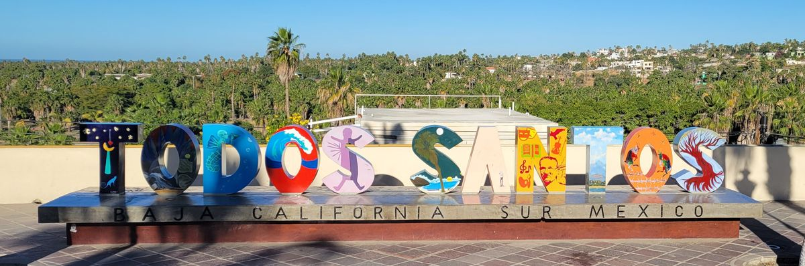
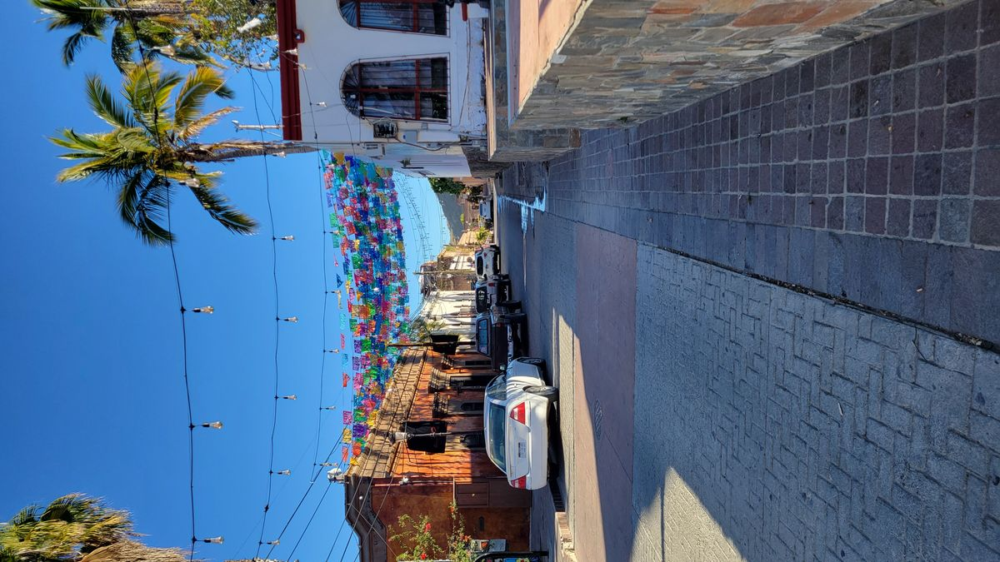
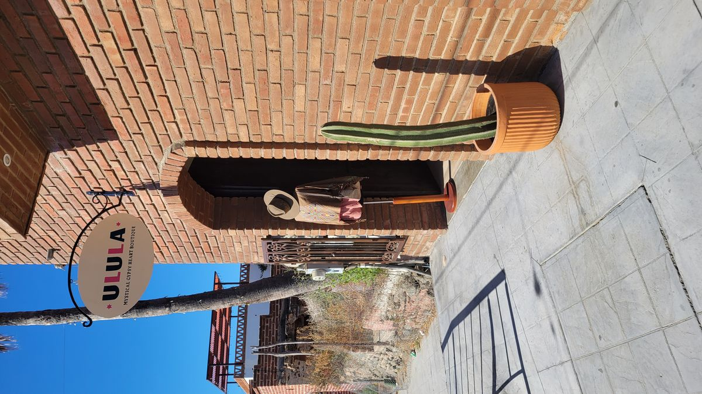
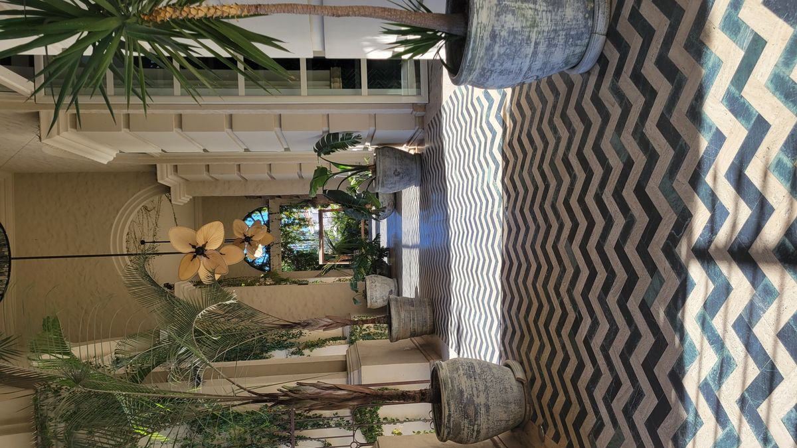
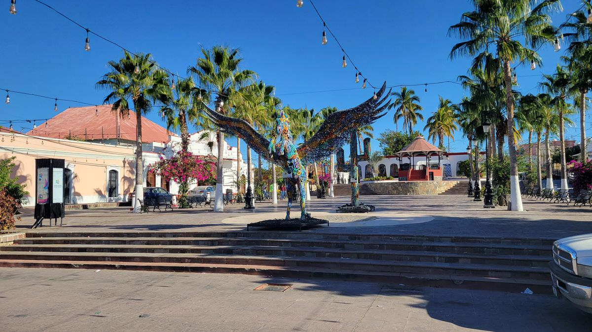
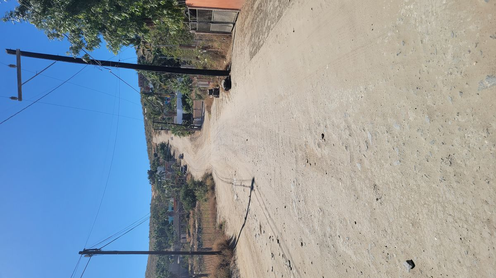
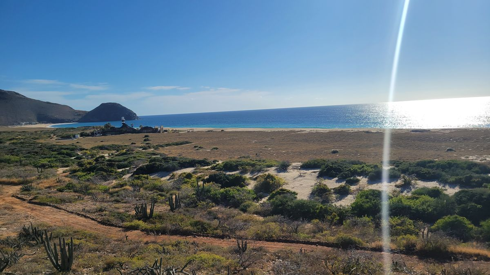
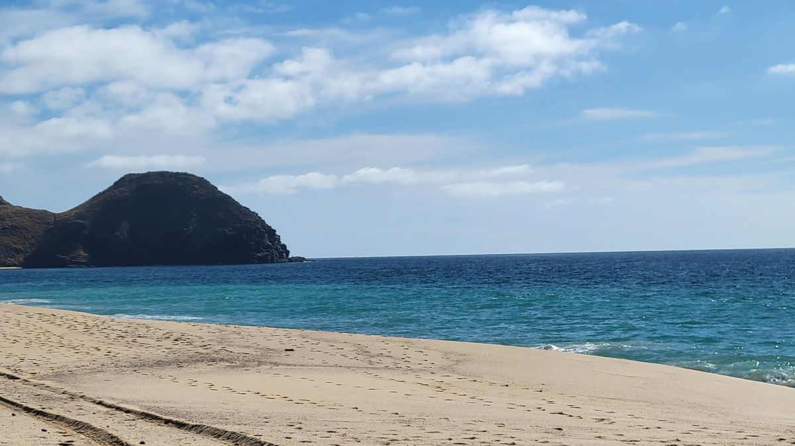

Todos Santos

Mexico’s Pueblo Magico’s a towns chosen by the Mexican Secretary for Tourism as towns that offer tourists “cultural richness, historical relevance, cuisine, art crafts, and great hospitality." There’s currently 132 Pueblo Magicos in Mexico and Todos Santos is my second. The first was Loreto and my stop there was less than 24 hours.
Located about an hour North of Cabo San Lucas, Baja’s ubiquitous resort destination Todos Santos is a popular day trip for people wanting to experience a little more authentic Mexico. The tour buses arrive late in the morning, but I was able to get an early start and have many locations in the town to myself before the throngs of tourists arrived from the resorts further south.
The storefronts are filled with boutiques selling artisan goods, restaurants and art galleries. It gives me “tropical Santa Fe” vibes for those familiar with the New Mexican capital. I walk the empty streets as storekeepers and restauranters readies their businesses for the wave of North American tourists arriving in a few hours.




As most people who visit Todos Santos are there for a few hours, maybe an overnight stay at one of its many boutique hotels, a lot of people will lack the desire to explore the area more. What they will usually miss are the miles of wide, deserted beaches that hide behind a small grouping of hills that guard the city from the Pacific Ocean behind them.
I had seen a few trails on the All Trails app on my phone and after confirming their accuracy with some fellow travelers at my hostel I decided to trek out on my own in the afternoon for a beach day. The closest beach was about 1.5 km from the hostel and after packing my things off I went. Until turned the first corner and saw this.

Let’s turn back for some proper shoes, as all I was wearing were my beach flip flops.
And on my second try I finally was able to get to the other side of the mountains and was greeted by this view.

Now hiking down the mountain, I find completely deserted beach, and set out my things. I was warned about the surf there the day before but it didn’t really set in until I started to walk along the water. I’m 6’1” and some waves were feet taller than me. I got in about to my knees and decided the beach would be better enjoyed from the sand than in the water. I was there alone and didn’t want to risk getting sucked into the Pacific abyss.
A few hours passed with ease as I watched whales play in the distance, the birds hunting fish from the sky and fisherman retuning to the port a few km down the beach with their catch. A few times getting a little more courage to get into the water only to see a massive wave crash on the beach soon after and remembering its probably not the best idea.


One of the many reasons I enjoy this type of travel it to find more the hidden gems of the world. Todos Santos is a beautiful city, with so much to offer visitors. But, if you just put a little more effort than you would had you bought a package tour here you can be rewarded with treasures like these.